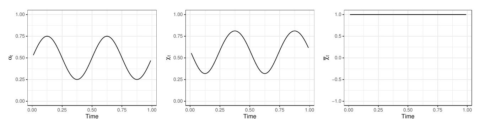
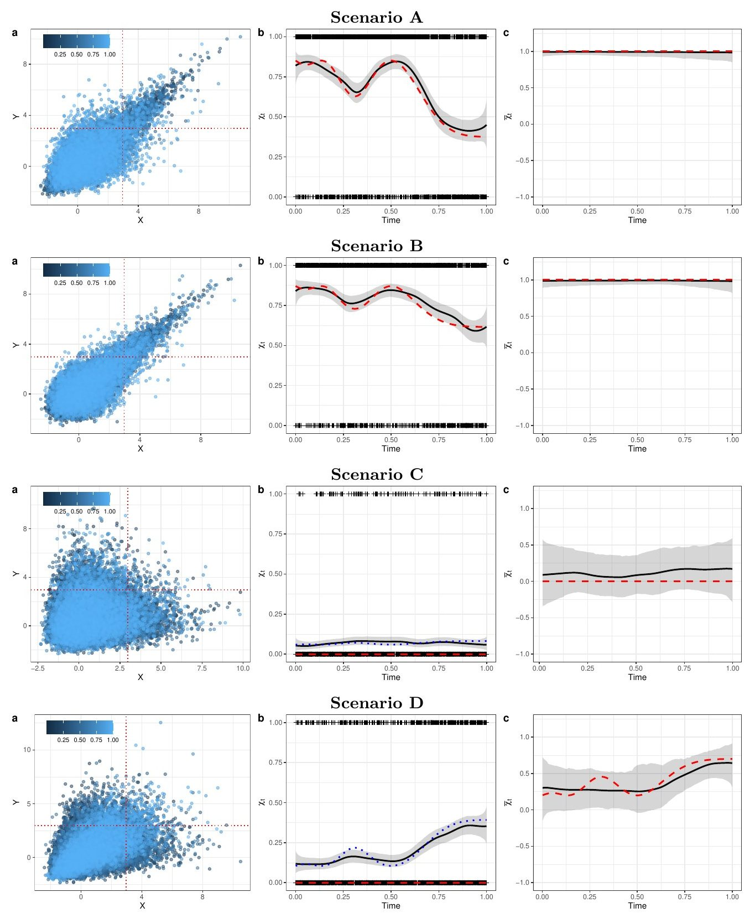
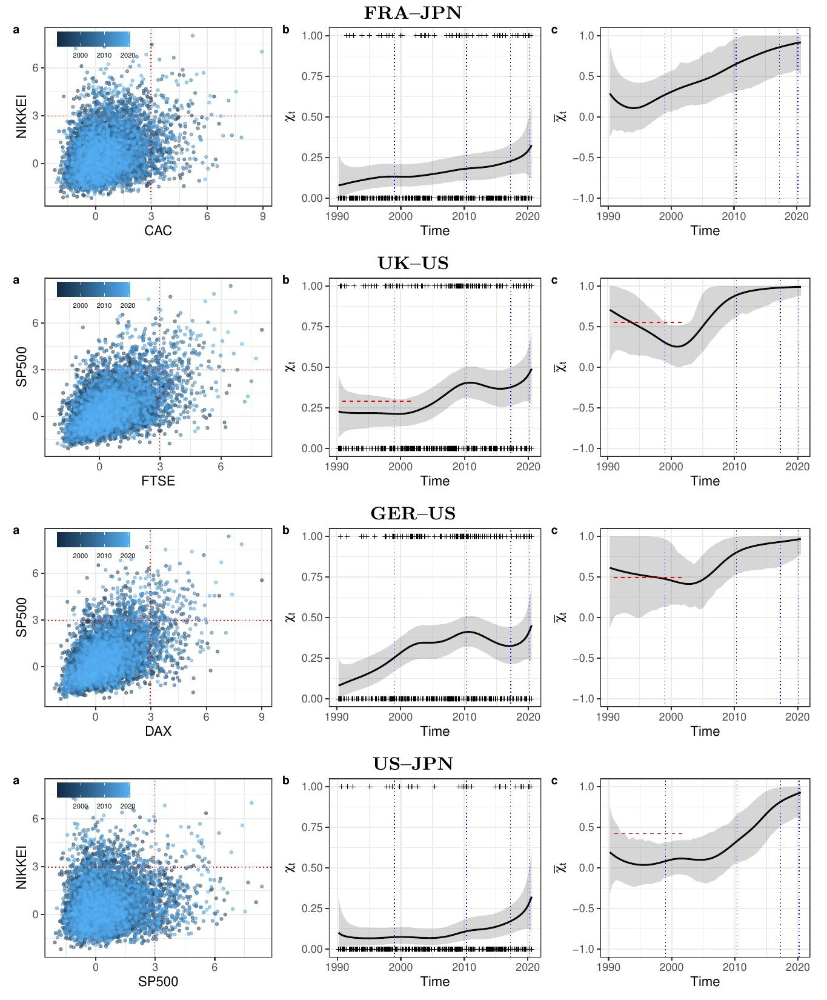

세계 증시는 폭락할 때 갈수록 함께 움직일까
연구 해설 · Journal of the Royal Statistical Society: Series C 73(3), 581-597 (2024)
평소에 함께 움직이는 시장이 폭락할 때도 함께 무너질까? 그 정도는 시간이 지나며 어떻게 변할까? 극단적 손실의 동조화를 재는 두 척도가 시간에 따라 매끄럽게 변하도록 베이즈 모형을 세우고, 1990년부터 2020년까지 6개 주요 증시에 적용하였다.
(1990.3~2020.5)
주가지수
(그림은 8쌍)
(1990→2010)
(1999→2020)
1왜 이 연구인가
분산 투자의 효과는 위기 때 가장 중요하다. 그런데 평소의 상관관계만으로는 폭락이 함께 오는지 알 수 없다. 예를 들어 이변량 정규분포에서는 상관계수가 양수여도, 기준을 극단으로 올릴수록 동시에 그 기준을 넘을 조건부 확률이 0으로 줄어든다.
Poon 등(2003, 2004)은 극단값 의존성을 쟀지만 기간별 분석은 표본을 임의로 나눈 탐색적 분석이었다.
시간 변화를 다룬 방법 대부분은 다변량 극단값 분포에 기반한다. 시장이 실제로는 점근적으로 독립이면 동반 극단 사건의 위험을 과대평가한다.
점근적 종속과 독립을 모두 다루는 시변 모형을 GLM처럼 간단히 적합한다. 두 상태를 모두 다룬 기존 방법으로는 Mhalla 등(2019b)이 있으며, 이 논문은 이와 성능을 비교한다.
2두 개의 척도
이 논문의 핵심은 극단적 동조화를 하나의 숫자로 요약하지 않는 것이다. χt와 χ̄t를 함께 본다.
한 시장이 극단적 손실을 낸 때 다른 시장도 그럴 확률의 극한값이다. 0보다 크면 점근적으로 종속이다.
1이면 점근적 종속의 신호이다. 1보다 작으면 χ = 0인 점근적 독립이며, 이때 값의 크기가 독립 범주 안에서의 의존 정도를 나타낸다.
χ̄t가 1에 머물고 χt가 오르면 극단적 의존이 강해진 것이다. χt가 계속 0이고 χ̄t가 오르면 독립 범주 안에서 의존이 커진 것이다.
χt = 0.7이라면, 대략 “한 시장이 임계값을 넘는 큰 손실을 낸 시기에 다른 시장도 그럴 확률이 70%”로 읽는다. 엄밀히는 임계값을 무한히 올린 극한의 값이고, 실제 추정은 높은 분위수 임계값에서 이루어진다.
논문은 Poon 등(2003)을 따라 χ̄t가 1에 가깝다는 증거가 있을 때만 χt에 초점을 두고, 그렇지 않으면 χ̄t에 초점을 두라고 권한다.
[그림 1] 시간에 따라 변하는 의존성의 예
로지스틱 구조에서 의존 모수 αt가 0.25와 0.75 사이를 오가면 χt = 2 − 2αt도 함께 순환한다. χ̄t는 1로 고정된다. 즉, 유형은 그대로 점근적 종속이고 강도만 변한다.

3분석 방법
핵심 착안은 극단값 문제를 일반화선형모형(GLM)처럼 다루는 것이다. 극단 사건만 추려 내면 χt에는 베르누이 자료, χ̄t에는 지수분포 자료가 근사적으로 생긴다.
- 주변분포를 맞춘다.두 시계열을 단위 Fréchet 척도로 바꾼다. 주가 실증에서는 먼저 GARCH(1,1)로 변동성 변화를 걸러 낸다.
- 극단 사건을 고른다.Yt가 임계값 u를 넘은 시점에 Xt도 넘었는지를 It(0 또는 1)로 기록한다. 두 값 중 작은 값 Zt가 u를 넘은 시점의 log(Zt/u)를 Et로 기록한다.
- 관측 모형을 놓는다.It는 평균이 χt에 수렴하는 베르누이, Et는 평균이 ηt에 수렴하는 지수분포를 근사적으로 따른다. χ̄t = 2ηt − 1이다.
- 시간 변화를 곡선으로 놓는다.연결함수와 B-스플라인으로 값의 범위를 지키면서 곡선을 만든다. 실증과 시뮬레이션 모두 매듭 20개, 3차 스플라인을 썼다.
- 매끄러움은 자료에서 배운다.인접 계수 차이에 1차 확률보행 사전분포를 준다(Bayesian P-spline). τ²이 작을수록 곡선이 매끄럽고, τ²도 함께 추정한다. MCMC로 표본을 얻는다.
χ̄t ≈ 2H{l(t)} − 1
F와 H는 값을 허용 범위 안에 묶는 역연결함수, g와 l은 매끄러운 시간 함수이다. P-spline과 평활화의 기초는 블로그 글 평활화 기법 소개와 베이지안 평활기법에서 다룬다.
4시뮬레이션: 방법이 작동하는가
의존 모수가 알려진 곡선을 따르도록 네 시나리오의 자료를 만들었다. 표본은 40,000개, 임계값은 0.95 분위수, 반복은 500회이다. 정답 곡선과의 평균 적분 절대오차(MIAE)를 Mhalla 등(2019b) 방법과 비교하였다. 값이 작을수록 좋다.
| 시나리오 | 유형 | χ: 제안 | χ: Mhalla | χ̄: 제안 | χ̄: Mhalla |
|---|---|---|---|---|---|
| A 로지스틱 | 점근적 종속 | 0.0280 | 0.0761 | 0.0108 | 0.4680 |
| B 클레이턴 | 점근적 종속 | 0.0215 | 0.0590 | 0.0079 | 0.8866 |
| C 모건스턴 | 점근적 독립 | 0.0088 | 0.0514 | 0.1016 | 0.0454 |
| D 정규 | 점근적 독립 | 0.0194 | 0.1557 | 0.1125 | 0.1002 |
χ는 네 시나리오 모두, χ̄는 점근적 종속 두 시나리오에서 제안 방법의 오차가 작았다. 점근적 독립 시나리오의 χ̄는 Mhalla 등의 방법이 더 작았다(C에서 약 절반). 논문의 표현이 “비슷하거나 더 낫다”(comparable, if not superior)인 이유이다.
참값 χt = 0인 정규분포에서도 유한한 임계값에서는 χt(u)가 0보다 훨씬 클 수 있다. 추정값은 극한값 0보다 이 임계값 수준의 χt(u)에 더 가까웠다. 그래서 χt만 보고 점근적 종속으로 판단하면 안 되고, χ̄t를 함께 봐야 한다.
[그림 2] 시나리오별 1회 실험 결과

주: 왼쪽은 로그 변환 자료의 산점도, 가운데와 오른쪽은 χt와 χ̄t이다. 실선은 사후평균, 회색은 신용구간, 파선은 참값, 점선은 임계값 수준의 χt(u)이다.
5데이터
Datastream의 일별 종가로 1990년 3월 5일부터 2020년 5월 4일까지의 음의 로그수익률(손실)을 만들었다. 대상은 CAC 40(프랑스), DAX 30(독일), FTSE 100(영국), Hang Seng(논문 표기 CHN), Nikkei 225(일본), S&P 500(미국)이다. GARCH(1,1) 필터를 거친 뒤 모든 쌍을 분석하였다.
먼저 기간 전체를 하나의 값으로 요약하면 같은 지역 안의 의존성이 높다. 평균 χ는 유럽 내 3쌍이 약 0.50, 유럽–미국 3쌍이 약 0.22, 유럽–동아시아 6쌍이 약 0.13이다(평균은 이 해설의 계산).
| 묶음 | 쌍 | χ | χ̄ |
|---|---|---|---|
| 같은 지역 | 프랑스–독일 | 0.54 | 0.88 |
| 같은 지역 | 영국–프랑스 | 0.50 | 0.75 |
| 같은 지역 | 영국–독일 | 0.47 | 0.85 |
| 같은 지역 | 항셍–일본 | 0.23 | 0.59 |
| 미국과 | 독일–미국 | 0.24 | 0.72 |
| 미국과 | 영국–미국 | 0.22 | 0.63 |
| 미국과 | 프랑스–미국 | 0.21 | 0.62 |
| 미국과 | 일본–미국 | 0.10 | 0.43 |
| 미국과 | 항셍–미국 | 0.08 | 0.30 |
| 유럽–동아시아 | 영국–항셍 | 0.16 | 0.51 |
| 유럽–동아시아 | 독일–항셍 | 0.15 | 0.43 |
| 유럽–동아시아 | 독일–일본 | 0.14 | 0.52 |
| 유럽–동아시아 | 영국–일본 | 0.13 | 0.45 |
| 유럽–동아시아 | 프랑스–일본 | 0.12 | 0.46 |
| 유럽–동아시아 | 프랑스–항셍 | 0.09 | 0.40 |
시간 변화를 읽을 때는 논문이 표시한 네 사건을 기준으로 삼는다.
- 1999.1.1tA 유럽 경제통화동맹 3단계 시작
- 2010.5.2tB 그리스 지원 패키지 가동, 유럽 재정위기 촉발
- 2017.3.29tC 영국의 리스본 조약 50조 발동(브렉시트)
- 2020.3.11tD WHO의 코로나19 팬데믹 선언
6결과 ① 같은 지역 안

주: 왼쪽은 로그 변환 자료의 산점도이다. 가운데(χt)와 오른쪽(χ̄t)의 실선은 사후평균, 회색은 신용구간, 빨간 파선은 Poon 등(2003)의 기간 값, 파란 세로 점선은 네 사건이다.
- 2010년까지 상승: χt가 2010년에 1990년보다 높을 사후확률은 영국–프랑스 0.92, 프랑스–독일 0.98이다.
- 재정위기 후 정체: 유럽 쌍의 상승세는 브렉시트 발동 무렵까지 멈췄다. 2010년 값이 2017년 값보다 클 사후확률은 영국–프랑스 0.85, 프랑스–독일 0.80, 영국–독일 0.70이다.
- 2017년 후 소폭 상승: 유럽 쌍 모두 다시 올랐으나 영국–독일은 증거가 약하다고 논문은 평가한다.
- 동아시아는 변화가 작음: 항셍–일본은 유럽 쌍보다 수준이 낮고 변화도 훨씬 작았다.
- 유형은 점근적 종속 쪽: 같은 지역 안의 χ̄t는 대체로 1에 가까워, χt를 강도의 지표로 읽을 근거가 된다. 영국–독일은 2001년 무렵 약 0.65까지 내려갔고 구간도 넓다.
7결과 ② 지역 사이와 미국과의 관계

주: 표기는 그림 3과 같다. 나머지 쌍의 그림은 논문의 부록에 있다.
여기서는 χ̄t의 변화가 더 뚜렷하다. 네 쌍 모두 1999년 이후 대체로 상승하여 최근에는 1에 가까워졌다. 논문은 이를 최근 모든 쌍에서 점근적 종속을 시사하는 결과로 해석한다.
주: 논문 그림 3·4의 벡터 좌표에서 읽어 이 해설이 다시 그렸다. 신용구간은 아래 표에 함께 적었으며, 논문 본문에는 구간의 수준이 적혀 있지 않다.
| 쌍 | χ 1990 | χ 2010 | χ 2017 | χ 2020 | χ̄ 1999 | χ̄ 2020 |
|---|---|---|---|---|---|---|
| 영국–프랑스 | 0.31 | 0.67 | 0.56 | 0.73 [0.50, 0.91] |
0.97 [0.71, 1.00] |
1.00 [1.00, 1.00] |
| 영국–독일 | 0.39 | 0.65 | 0.46 | 0.61 [0.37, 0.83] |
0.70 [0.27, 0.97] |
0.99 [0.92, 1.00] |
| 프랑스–독일 | 0.33 | 0.75 | 0.71 | 0.78 [0.57, 0.93] |
0.91 [0.44, 1.00] |
0.99 [0.98, 1.00] |
| 항셍–일본 | 0.27 | 0.34 | 0.37 | 0.30 [0.12, 0.52] |
0.86 [0.38, 1.00] |
0.98 [0.69, 1.00] |
| 프랑스–일본 | 0.08 | 0.18 | 0.23 | 0.32 [0.12, 0.56] |
0.28 [0.05, 0.54] |
0.92 [0.53, 1.00] |
| 영국–미국 | 0.23 | 0.41 | 0.38 | 0.48 [0.28, 0.69] |
0.30 [0.06, 0.55] |
0.99 [0.88, 1.00] |
| 독일–미국 | 0.08 | 0.41 | 0.33 | 0.44 [0.23, 0.66] |
0.47 [0.14, 0.96] |
0.97 [0.77, 1.00] |
| 미국–일본 | 0.10 | 0.11 | 0.18 | 0.31 [0.11, 0.56] |
0.09 [−0.12, 0.32] |
0.93 [0.59, 1.00] |
주: 논문이 표로 제시한 값이 아니라 그림의 곡선 좌표에서 읽은 근사값이다. 시점은 1990년 3월, 2010년 5월, 2017년 3월, 2020년 3월, 1999년 1월이며 대괄호는 같은 시점의 신용구간이다.
논문은 금융 맥락의 예로 프랑스–일본을 든다. 2006년 시라크 당시 대통령은 CAC 40 대기업 자본의 45%를 외국 회사가 보유한다고 말했고, 프랑스은행 자료에 따르면 일본은 2010~2015년 CAC 40의 주요 비거주 보유국이었다. 다만 이는 배경 설명이며, 소유 구조가 동조화의 원인임을 검증한 분석은 아니다.
8무엇이 확인되었나
| 주장 | 근거 | 읽는 법 |
|---|---|---|
| 제안 방법이 시변 의존성을 복원한다 | 500회 시뮬레이션, 표 1 | χ는 강함. 점근적 독립의 χ̄는 비교 방법이 더 나은 경우 있음 |
| 유럽의 극단적 동조화가 2010년까지 강해졌다 | 사후확률 0.92(영국–프랑스), 0.98(프랑스–독일) | 증거가 강함. 영국–독일은 이 수치가 보고되지 않음 |
| 재정위기 후 정체, 브렉시트 무렵 후 재상승 | 사후확률 0.70~0.85, 그림 3 | 정체는 중간 정도의 증거. 재상승은 사후확률 미보고, 구간 넓음 |
| 지역 간 쌍도 최근 점근적 종속 쪽으로 이동했다 | 그림 4의 χ̄t | 방향은 뚜렷함. 점근적 종속 여부를 형식적으로 검정한 것은 아님 |
9시사점과 한계
시사점
- 위험 분산: 시장이 폭락 때 함께 움직이는 정도가 변하므로, 고정된 값이나 평소의 상관만으로 분산 효과를 판단하면 위험을 잘못 볼 수 있다.
- 방법: GLM처럼 간단히 적합할 수 있고, 점근적 독립일 때 동반 극단 위험을 과대평가하는 문제를 피하도록 설계되었다.
- 응용: 극단 사건이 시간에 따라 변하는 기후, 지질, 수문 자료에도 적용할 수 있다.
논문이 밝힌 한계와 다음 과제
- 쌍별 분석: 쌍의 결과만으로 셋 이상의 시장이 함께 폭락할 확률은 알 수 없다.
- 유한 임계값: 모든 극단값 방법처럼 극한에 도달하지 않은 자료를 쓰는 대가가 있다.
- 다음 과제: 구조 변화와 급변 추적, 공변량을 넣은 일반화가법모형, Bayesian Lasso를 제안한다.
- 표본 끝의 불확실성: 곡선의 양 끝은 자료가 한쪽에만 있어 구간이 넓다. 예컨대 표본 끝인 2020년 5월의 영국–프랑스 χt 구간은 약 0.49~0.93이다. 코로나19 직후의 상승은 잠정적으로 읽어야 하고, 자료는 2020년 5월에서 끝난다.
- 사건과 원인: 세로선은 해석을 돕는 표시이며, 사건의 효과를 식별한 것은 아니다. 2017년 이후의 상승에는 브렉시트와 코로나19가 겹쳐 있다.
- χ̄ = 1의 판단: χ̄t는 1을 넘을 수 없으므로 구간이 1에 닿는 것만으로 점근적 종속이 입증되지는 않는다.
- 구간 비교: 시점별 구간의 겹침은 두 시점 차이의 검정이 아니다. 미국–일본과 영국–미국의 χ̄는 1999년과 2020년 구간이 겹치지 않지만, 독일–미국은 겹친다.
- 거래 시간차: 일별 종가를 쓰므로 마감 시각이 다른 지역 사이에서는 같은 충격이 다른 날짜에 반영될 수 있다. 본문에서는 이 조정을 다루지 않아, 지역 간 값이 낮게 나올 가능성이 있다.
- 항셍의 표기: 논문은 Hang Seng을 CHN(중국)으로 표기하지만, 이 지수는 홍콩 시장의 지수이다. 중국 본토 시장으로 바로 일반화하면 안 된다.
- 부록: 이 해설은 본문만 확인하였다. 민감도 분석, 시간에 따라 변하는 주변분포 실험, 나머지 쌍의 그림은 부록에 있다.
용어 풀이
- 점근적 종속
- 기준을 아무리 극단으로 올려도 함께 넘을 조건부 확률이 0이 되지 않는 상태(χ > 0).
- 점근적 독립
- 기준을 극단으로 올릴수록 함께 넘을 조건부 확률이 0으로 줄어드는 상태(χ = 0). 그 전까지는 양의 의존이 있을 수 있다.
- 꼬리의존계수 η
- 동시 초과 확률이 기준에 따라 줄어드는 속도를 나타낸다. χ̄ = 2η − 1이다.
- 사후확률·신용구간
- 자료를 본 뒤 모수에 대해 갖는 확률과, 모수가 일정 확률로 들어 있는 구간이다.
- P-spline
- 구간별 다항식을 이어 만든 곡선에서 인접 계수의 차이에 벌점을 주어 매끄럽게 만드는 방법이다.
- GARCH(1,1)
- 수익률 변동성이 시기에 따라 변하는 것을 모형화한다. 이를 걸러 내면 변동성 변화와 의존성 변화를 구분하는 데 도움이 된다.
- 단위 Fréchet 척도
- 두 변수의 단위를 같게 맞춘 척도이다. P(X > u) = exp(−1/u)로 두어 의존 구조만 비교할 수 있게 한다.
- MIAE
- 추정 곡선과 참 곡선의 차이를 전 구간에서 적분해 평균낸 오차이다. 작을수록 좋다.
논문: Lee, J., de Carvalho, M., Rua, A. & Avila, J. (2024). Bayesian smoothing for time-varying extremal dependence. Journal of the Royal Statistical Society: Series C, 73(3), 581–597. doi:10.1093/jrsssc/qlae002.
그림 1~4는 논문 원고의 그림을 잘라 옮겼고(CC BY 4.0), 설명과 표는 이 페이지를 위해 번역·발췌하였다. 해설 그림 1과 표 3은 논문 그림의 곡선 좌표에서 새로 만들었다. 이 페이지는 연구 내용의 해설이며, 소속 기관의 공식 견해가 아니다.